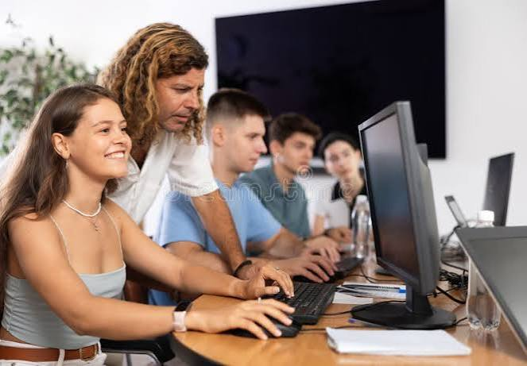
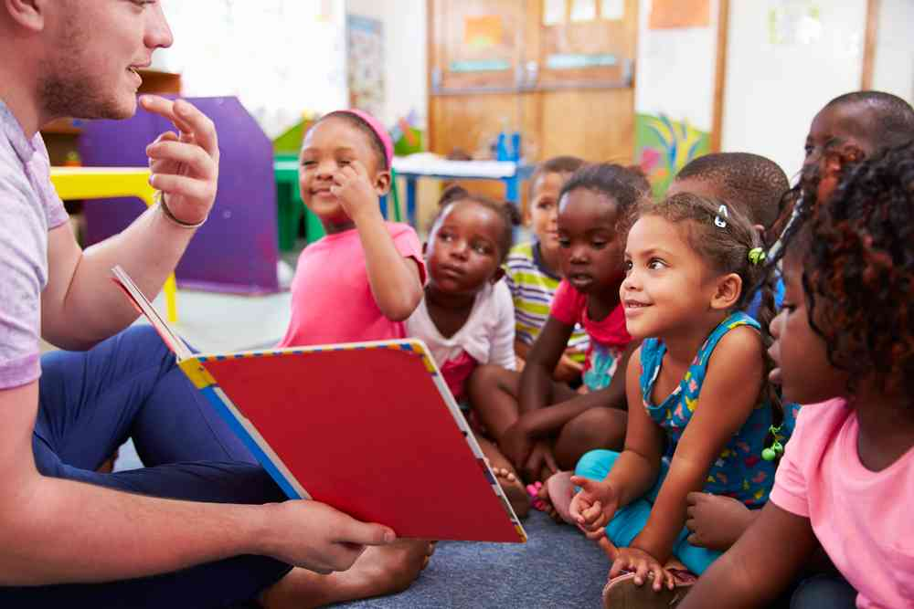

Capacitação Profissional para Jovens
Educação / Tecnologia
O projeto oferece aulas semanais de informática básica
para jovens em situação de vulnerabilidade social.
As atividades apresentam conceitos fundamentais de
computadores, internet e ferramentas digitais,
contribuindo para o desenvolvimento de habilidades
importantes para os estudos e para o mercado de trabalho.
Projeto de oficinas de Leitura
Cultura / Infantil
As oficinas promovem momentos de leitura e interação
entre crianças, voluntários e educadores.
Por meio de
histórias, rodas de leitura e atividades relacionadas
aos livros, o projeto busca estimular o interesse pela
leitura, a criatividade e o desenvolvimento da
interpretação e da comunicação.